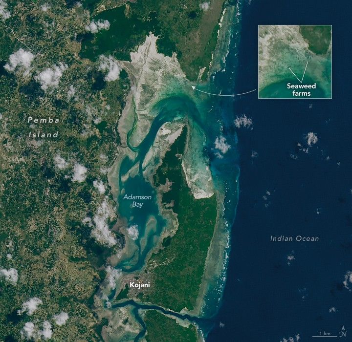

A Seaweed Economy Tied to the Tides
When viewed from above, the waters around Tanzania’s Pemba Island form a colorful tapestry of blues, greens, and browns—signs of the seagrass meadows, sand flats, algal mats, and coral reefs below the waves. Look carefully, and you can spot something else: rectangular beds of seaweed flanking beaches and tucked into the island’s many channels and bays.
The OLI-2 (Operational Land Imager-2) on Landsat 9 captured this image of seaweed aquaculture in Adamson Bay on the northern part of Pemba Island on August 5, 2024. Pemba, part of the Zanzibar archipelago, is located about 60 kilometers (40 miles) east of the Tanzanian mainland and 50 kilometers (30 miles) north of Unguja, the neighboring island. Zanzibar seaweed farms are typically found in a band about 400 to 600 meters (1,300 to 2,000 feet) from shore in waters less than 2 meters (6 feet) deep. They are usually situated in or near seagrass meadows and sandy areas.
The dark patches in the satellite image typically consist of rows of wooden stakes holding lines of seaweed. These plots are part of Zanzibar’s fast-growing seaweed sector, where thousands of farmers—often women—harvest red seaweed for global export. Most people farm in the intertidal zone, which is completely exposed during spring low tides. Others prefer the shallow subtidal zone, which stays submerged at all times but is still shallow enough for farmers to wade through during low tides.
Farmers typically raise Eucheuma and Kappaphycus, red seaweeds that are dried and exported to international markets for use in food products, cosmetics, and pharmaceuticals. These seaweeds are valued as a source of carrageenan, a gelatinous substance used as a thickener and stabilizer in foods such as yogurt, plant milks, and ice cream.
Large-scale commercial seaweed farming is a relatively new phenomenon in Zanzibar. Some people foraged and sold wild seaweeds in the 1970s, but it was not until 1989 that entrepreneurs brought seedlings from the Philippines and started raising seaweed on Pemba.
Since then, the industry has grown rapidly. According to one report, seaweed farms employ tens of thousands of people in Zanzibar and are spread across more than 80 villages, including more than 30 on Pemba. The seaweed sector has grown to be one of Tanzania’s largest export industries.
Many observers praise the practice for employing large numbers of people, storing carbon, and absorbing excess nitrogen and phosphorus, while not taking up arable land or requiring fertilizers. However, seaweed farming has been shown to reduce the health and biodiversity of seagrass meadows in some areas.